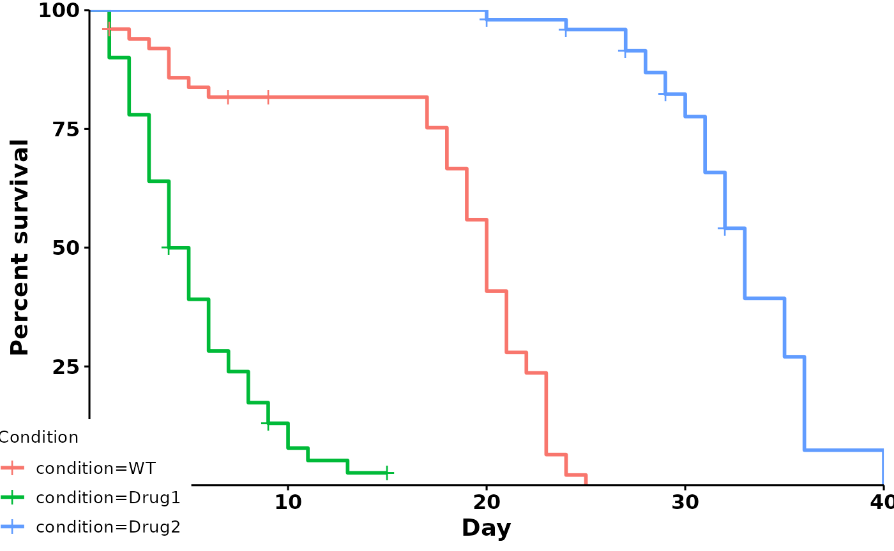
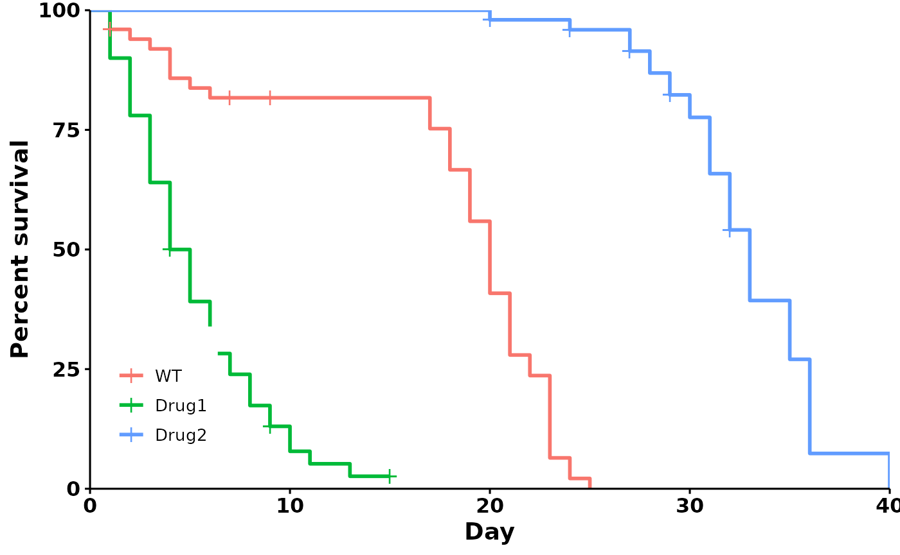
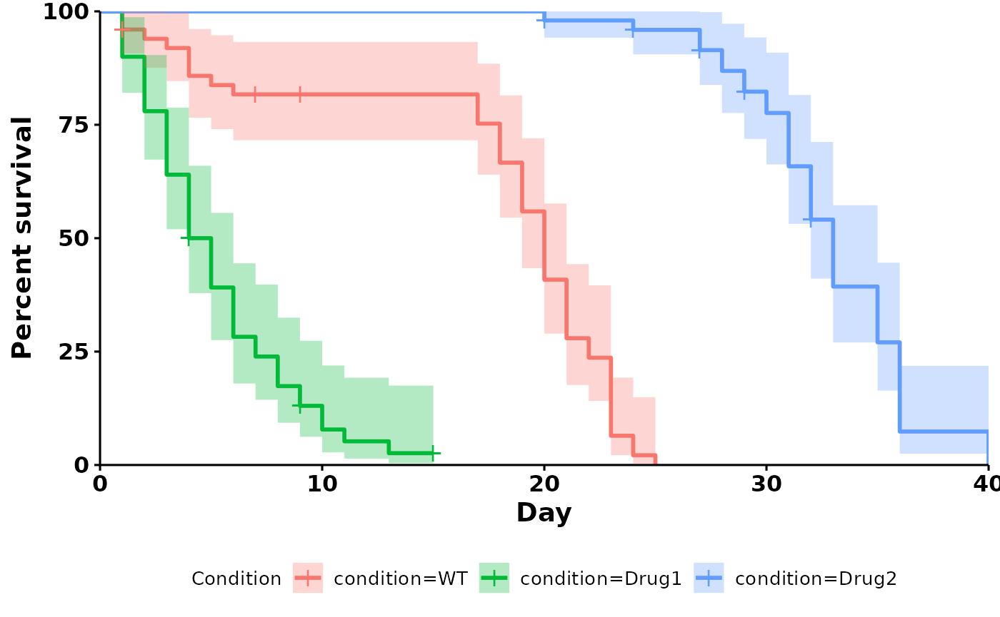
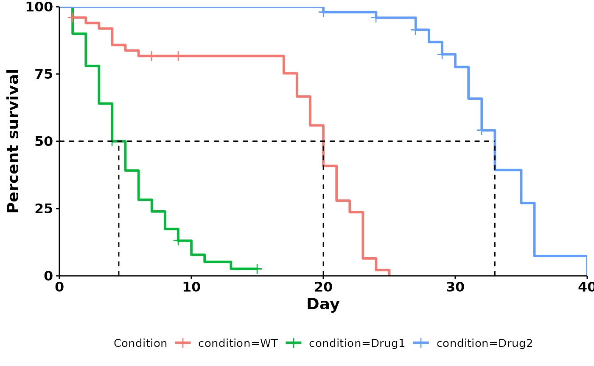
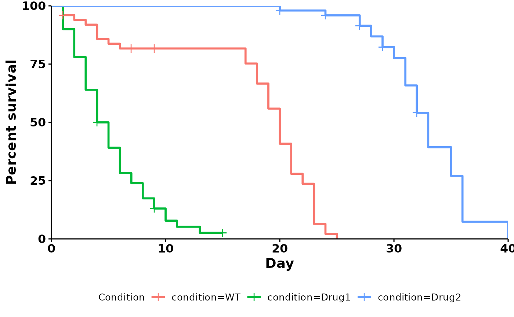
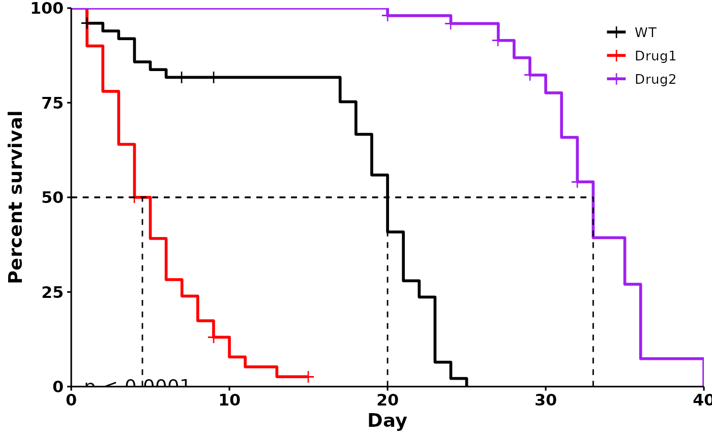

Interfacing with other survival packages
interfacing-with-other-packages.Rmd
library(ggbulksurv)
library(survival)
library(survminer)
#> Loading required package: ggplot2
#> Loading required package: ggpubr
#>
#> Attaching package: 'survminer'
#> The following object is masked from 'package:survival':
#>
#> myelomaTwo of the most popular packages for survival analysis are survival
and survminer.
This vignette will demonstrate how to use ggbulksurv’s
output as input to other survival packages.
We first start by documenting the three functions that
run_bulksurv() wraps around. At each stage, we demonstrate
how this can be used as input to other packages for the advanced
user.
Behind the scenes
The run_bulksurv() command makes several choices for the
user, with the caveat that these assumptions tend to hold under most
conditions. Users who desire total control over the process should read
this section for a more detailed walkthrough.
run_bulksurv() is a wrapper around the 3 following
functions:
-
get_indiv_surv: Converts a bulk survival table into an individual survival table. -
fit_surv: Fits a survival object fromsurvival::survfit(). -
plot_surv: Plots a survival curve usingsurvminer::ggsurvplot().
This section takes you through the 3 steps that
run_bulksurv() wraps around.
1. Get individual survivals
get_indiv_surv converts a table of bulk survival data
into individual survivals. Each row now represents an individual.
day represents the number of days lived, while
status is either 0 (censored) or 1 (dead).
df_isurv <- get_indiv_surv(sample_data,
sample_order = c("WT", "Drug1", "Drug2"))
head(df_isurv)
#> # A tibble: 6 × 3
#> condition day status
#> <fct> <int> <dbl>
#> 1 WT 1 0
#> 2 WT 1 1
#> 3 WT 1 1
#> 4 Drug1 1 1
#> 5 Drug1 1 1
#> 6 Drug1 1 1We now have a tibble with one individual per row.
At this point, this data can be used as input to other packages, such
as survminer() and survival.
2. Fit the survival object
fit_surv creates a survfit object for
day and status, then fits a survival curve by
condition. It takes in a data.frame with one
individual per row, and creates a survfit object using the
survival::survfit() function.
# Fit survival object
df_fit <- fit_surv(df_isurv)
head(df_fit)
#> Call: survfit(formula = Surv(day, status) ~ condition, data = df_isurv)
#>
#> n events median 0.95LCL 0.95UCL
#> condition=WT 50 47 20.0 19 21
#> condition=Drug1 50 46 4.5 4 6
#> condition=Drug2 50 42 33.0 32 35Alternatively, you can fit this manually using the
survival package:
Drug1 has the shortest median lifespan of 4.5 days, with a 95% confidence interval (95% CI) of 4 to 6 days. In contrast, Drug2 has the longest median lifespan of 33 days, with a 95% CI of 32 to 35 days.
3. Plot the survival object
Using plot_surv()
plot_surv is a wrapper around [survminer::ggsurvplot()].
As such, all additional arguments passed to plot_surv will
be passed to survminer::ggsurvplot(). Some useful examples
are illustrated below:
df_isurv <- get_indiv_surv(sample_data,
sample_order = c("WT", "Drug1", "Drug2"))
plot_surv(fit = df_fit,
type = "survival",
data = df_isurv)Changing legend positions
Specifying a position (right, left,
bottom or top) with
legend.position:
plot_surv(df_fit,
type = "survival",
data = df_isurv,
sample_order = c("WT", "Drug1", "Drug2"),
print_stats = FALSE,
legend.position = "right" # Change legend position
)Specific coordinates can also be used. For bottom left, use
legend.position = c(0,0); for top right, use
legend.position = c(1,1).
plot_surv(df_fit,
type = "survival",
sample_order = c("WT", "Drug1", "Drug2"),
print_stats = FALSE,
data = df_isurv,
legend.position = c(0,0) # Specify coordinates
)
It doesn’t fit - in fact, the legend is partially obscuring our x and y axes.
We can simplify the legend by removing the legend title and the
trailing condition= symbol:
sample_order = c("WT", "Drug1", "Drug2")
plot_surv(df_fit,
type = "survival",
sample_order = sample_order,
data = df_isurv,
print_stats = FALSE,
legend.position = c(0.09,0.2), # Specify coordinates
legend.title = "", # Remove legend title
legend.labs = sample_order # Remove `condition=`
)
Adding confidence intervals and median survival
plot_surv(df_fit,
data = df_isurv,
type = "survival",
add.conf.int = TRUE, # Add 95% confidence interval
legend.position = "bottom")
plot_surv(df_fit,
data = df_isurv,
type = "survival",
add.median.survival = TRUE, # Add median survival line
legend.position = "bottom")
Customizing x-axis day breaks
plot_surv(df_fit,
data = df_isurv,
type = "survival",
legend.position = "bottom",
break.x.by = 5 # Breaks every 5 days
)
Putting it all together:
sample_order = c("WT", "Drug1", "Drug2")
plot_surv(df_fit,
data = df_isurv,
type = "survival",
sample_order = sample_order,
legend.labs = sample_order, # Rename legend
print_stats = FALSE, # don't print stats
palette = c("black", "red", "purple"), # Custom colors
legend.title = "", # Remove legend title
legend.position = c(0.9, 0.9), # Position legend at top right
add.pval = TRUE, # Add pvalue
add.median.survival = TRUE # Add 50% median line
)
Using survminer::ggsurvplot()
Alternatively, you can construct your own plots using
survminer::ggsurvplot:
survminer::ggsurvplot(fit = df_fit,
data = df_isurv,
ncensor.plot = TRUE)
4. Print summary statistics
Using the summary_stats function:
Calculates median survival, logrank test and pairwise logrank test.
stats <- summary_stats(df_isurv,
type = "all")
stats
#> $median_survival
#> Call: survfit(formula = Surv(day, status) ~ condition, data = df_isurv)
#>
#> n events median 0.95LCL 0.95UCL
#> condition=WT 50 47 20.0 19 21
#> condition=Drug1 50 46 4.5 4 6
#> condition=Drug2 50 42 33.0 32 35
#>
#> $logrank
#> Call:
#> survival::survdiff(formula = Surv(day, status) ~ condition, data = df_isurv)
#>
#> N Observed Expected (O-E)^2/E (O-E)^2/V
#> condition=WT 50 47 31.2 7.94 12.9
#> condition=Drug1 50 46 12.5 89.99 128.1
#> condition=Drug2 50 42 91.3 26.60 123.3
#>
#> Chisq= 186 on 2 degrees of freedom, p= <2e-16
#>
#> $pairwise
#>
#> Pairwise comparisons using Log-Rank test
#>
#> data: df_isurv and condition
#>
#> WT Drug1
#> Drug1 2.3e-14 -
#> Drug2 < 2e-16 < 2e-16
#>
#> P value adjustment method: BHThis returns a list object, which allows us to
individually pull out the values of interest. For example:
The logrank test:
stats$logrank
#> Call:
#> survival::survdiff(formula = Surv(day, status) ~ condition, data = df_isurv)
#>
#> N Observed Expected (O-E)^2/E (O-E)^2/V
#> condition=WT 50 47 31.2 7.94 12.9
#> condition=Drug1 50 46 12.5 89.99 128.1
#> condition=Drug2 50 42 91.3 26.60 123.3
#>
#> Chisq= 186 on 2 degrees of freedom, p= <2e-16
# chisq value of logrank test
stats$logrank$chisq
#> [1] 186.0854
# pvalue of logrank test
stats$logrank$pvalue
#> [1] 3.909058e-41Pairwise log-rank test:
stats$pairwise
#>
#> Pairwise comparisons using Log-Rank test
#>
#> data: df_isurv and condition
#>
#> WT Drug1
#> Drug1 2.3e-14 -
#> Drug2 < 2e-16 < 2e-16
#>
#> P value adjustment method: BH
# p-values
stats$pairwise$p.value
#> WT Drug1
#> Drug1 2.291558e-14 NA
#> Drug2 3.367080e-24 3.36708e-24To use a different p-value adjustment method, specify the p_adjust_method as follows:
stats_2 <- summary_stats(df_isurv,
type = "all",
p_adjust_method = "bonferroni")
stats_2
#> $median_survival
#> Call: survfit(formula = Surv(day, status) ~ condition, data = df_isurv)
#>
#> n events median 0.95LCL 0.95UCL
#> condition=WT 50 47 20.0 19 21
#> condition=Drug1 50 46 4.5 4 6
#> condition=Drug2 50 42 33.0 32 35
#>
#> $logrank
#> Call:
#> survival::survdiff(formula = Surv(day, status) ~ condition, data = df_isurv)
#>
#> N Observed Expected (O-E)^2/E (O-E)^2/V
#> condition=WT 50 47 31.2 7.94 12.9
#> condition=Drug1 50 46 12.5 89.99 128.1
#> condition=Drug2 50 42 91.3 26.60 123.3
#>
#> Chisq= 186 on 2 degrees of freedom, p= <2e-16
#>
#> $pairwise
#>
#> Pairwise comparisons using Log-Rank test
#>
#> data: df_isurv and condition
#>
#> WT Drug1
#> Drug1 6.9e-14 -
#> Drug2 < 2e-16 < 2e-16
#>
#> P value adjustment method: bonferroniUsing the survminer package directly
test = survminer::pairwise_survdiff(
formula = survival::Surv(day, status) ~ condition, # Fit a survival object
data = df_isurv,
p.adjust.method = "bonferroni" # Use bonferroni correction
)
test
#>
#> Pairwise comparisons using Log-Rank test
#>
#> data: df_isurv and condition
#>
#> WT Drug1
#> Drug1 6.9e-14 -
#> Drug2 < 2e-16 < 2e-16
#>
#> P value adjustment method: bonferroni
# obtain specific p-values
test$p.value
#> WT Drug1
#> Drug1 6.874675e-14 NA
#> Drug2 5.465280e-24 6.73416e-24